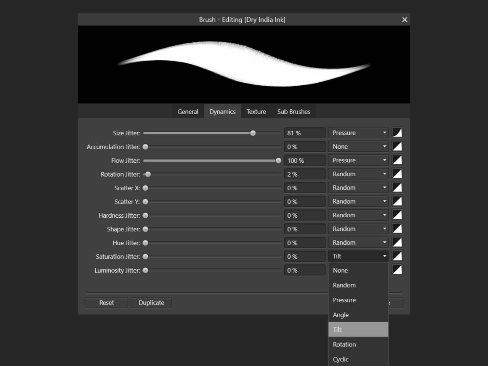

You can use a Microsoft Surface Pen to interact with your Affinity app's user interface and to paint and draw using creative tools.

On compatible hardware, Surface Pen provides pressure and tilt input to your Affinity app. For example, a brush's dynamics can be configured so that pressure creates variation in brush size and tilt controls saturation.
When you turn Surface Pen around and use its eraser, your Affinity app recognizes whether the current layer contains vector or raster objects and masks out or erases the areas of contact, respectively. This happens without you having to manually perform additional steps, such as switch Persona, create a mask layer, or select the Erase Brush Tool.
For your Affinity app to use contact from Surface Pen but not your fingers for tool interaction, turn on Touch for gestures only in its Tools preferences.